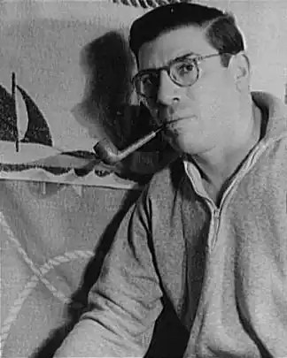

Народився в Нью-Йорку в 1897 році в сім'ї італійця і емігрантки з Австрії. У 1921 році закінчив Колумбійський університет. Деякий час працював кінооглядач в газеті New York Daily News, але на цьому терені показав себе не дуже вдало і був переведений в спортивний відділ. Для того, щоб написати статтю про знаменитого боксера Джека Демпсі, Гелліко напросився на поєдинок з ним — журналістові хотілося знати, як це — бути збитим з ніг чемпіоном у важкій вазі. Він протримався дві хвилини, написав блискучу статтю і прославився на всю Америку. У 1923-му він став редактором відділу спорту і одним з кращих спортивних журналістів США. Однак Гелліко з дитинства мріяв стати письменником — і тому, крім статей про спорт, пропонував журналів Vanity Fair та Saturday Evening Post розповіді. У 1936 році він переїхав до Європи і присвятив себе писанню. На початку 40-х років він раптово став знаменитий, випустивши зворушливу і захоплюючу книгу "Сніжний гусак". З тих пір всі його книги — бестселери. Найвідоміші з них — "Дженні" (1950), "Ослина диво" (1952), "Любов до семи лялькам" (1954), "Томасіна" (1957), "Квіти для місіс Харріс" і "Місіс Харріс їде в Нью —Йорк "(1960). Він написав книгу про Святого Патріка — покровителя Ірландії. Сам Пол Гелліко був добрим покровителем тварин: в будинку у нього жили великий дог і двадцять три кішки.
Пол Гелліко багато подорожував, жив в Англії, Мексиці, Ліхтенштейні, ходив на яхті, фехтував, захоплювався рибалкою. Був одружений чотири рази, незважаючи на свою приналежність до католицької церкви. В останні роки він вважав за краще жити в Антібі на півдні Франції, де й помер у віці 79 років. Помер 17 липня 1976 року.
Екранізації та адаптації: За книгою "Любов до семи лялькам" поставлений фільм "Лілі" . Повість "Томасіна" екранізував Уолт Дісней. У цьому ігровому фільмі "Три життя Томасіни" грала справжня кішка. У 1991 році режисер Леонід Нечаєв зняв на судії ім. М. Горького фільм "Божевільна Лорі", за мотивами повісті "Томасіна". екранізувати також "дорослі" книжки Гелліко — "Пригода" Посейдона "(двічі — в 1972 році (" Пригода "Посейдона", режисер Рональд Ним) і в 2006-му ("Посейдон", режисер Вольфганг Петерсен) і його продовження — "Після пригод" Посейдона "(фільм з тією ж назвою поставлений в 1979-му режисером Ірвіном Алленом). Телеканал Hallmark також здійснив свою екранізацію" Пригоди "Посейдона", кілька відозменів сюжет; режисером цієї постановки став Джон Патч. За мотивами "Сніжного гусака" англійська прогресив-рок-група Camel записала один зі своїх самих вдалих альбомів — "The Snow Goose" (1974). Група навіть зверталася до Гелліко з проханням написати тексти пісень для альбому, але письменник, для якого назва Camel асоціювалося насамперед з торговою маркою сигарет, відмовився, більше того, він навіть подав на групу до суду з вимогою заборонити використання назви книги в якості назви альбому . Цього йому, однак, досягти не вдалося. Результатом судового розгляду стала напис на обкладинці диска: "music inspired by" (музика, натхненна книгою).